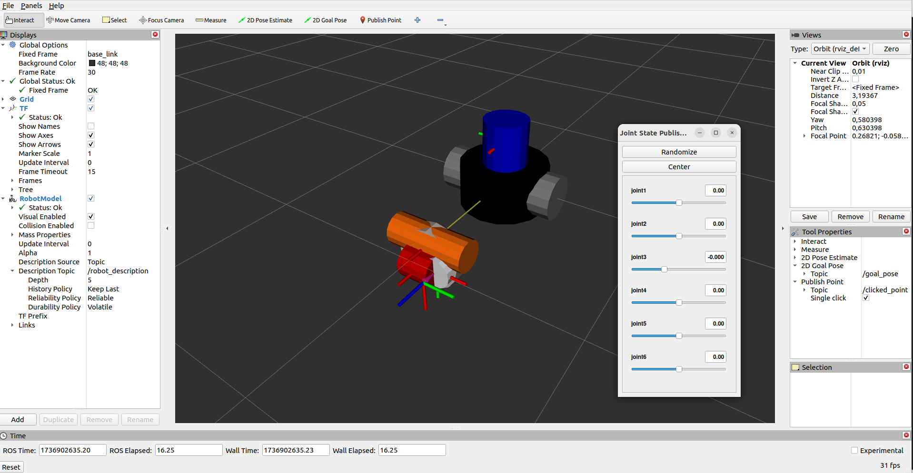
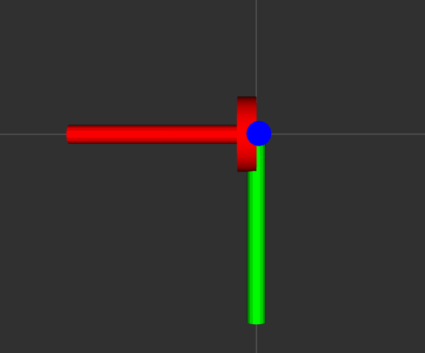

2.4. URDF in Practice: The Scanbot

Figure 2.20 Scanbot Robot, the non-parallel example robot, and its kinematic chain.
For practice, we will use a simple example robot called Scanbot. It consists of a part with x, y, z translation, a green arm capable of rotating around the x-axis, and a 3-degree-of-freedom rotational system supporting a camera at its end effector (see Figure 2.6).
2.4.1. Links meshes
To produce the meshes, we used the cadquery software (very well documented). This allows you to procedurally create shapes from the Python language using the basic CAD operations (sketch, extrusion, boolean combinations of shapes).
Exercise 2.2 (génération de maillages des segments du scanbot de manière procédurale avec cadquery. [avancé])
Install cq-editor, then run the scanbot.py program
exec( open('<path_to>/scanbot.py').read() )
by replacing <path_to> with the absolute path of the scanbot.py file (don’t forget to put the cq_utils.py file in the same directory).
This will create the meshes of the Scanbot links.
2.4.1.1. STEP Format
The meshes of the Scanbot segments in STEP format are as follows:
Exercise 2.3 (génération de fichier de maillage collada à partir d’autre fichiers de maillage (step,stl,…) [pratique])
Using the above meshes in STEP format, use a CAD software to convert them to Collada (.dae) format. Hint: Use FreeCAD.
2.4.1.2. Collada Format (.dae)
The meshes of the Scanbot segments in Collada format are as follows:
2.4.2. Producing an URDF
We will describe this robot in URDF.
For this, we will use the URDF model visualization tool provided by ROS2: rviz2.
To facilitate this step, we will create a ROS2 package dedicated to visualization using the tool developed by IRIS template2instance.
This tool allows for easy creation of a ROS2 package from a template.
For this, we need the ros2/view_robot template, which is a ROS2 package template dedicated to robot visualization using rviz2.
template2instance is a Python tool using the poetry dependency manager, which is used as follows:
create path_to_template path_to_new_package [--config path_to_config.json]
2.4.2.1. Camera and 3 Degrees of Freedom in Rotation
Let’s start by simply describing the camera and the 3 degrees of freedom in rotation.
For this, let’s create a ROS2 package named scanbot_cam_description from the view_robot_template template.
It is good practice to place URDF files in a ROS2 package dedicated to the robot’s description, named my_robot_name_**description**.
For this, copy/edit the following configuration file to suit your case:
{
"PACKAGE_NAME": "scanbot_cam_description",
"PACKAGE_VERSION": "1.0.0",
"PACKAGE_DESCRIPTION": "Launch file to view the robot",
"PACKAGE_MAINTAINER_EMAIL": "yguel.robotics@gmail.com",
"PACKAGE_MAINTAINER_NAME": "Manuel YGUEL",
"PACKAGE_LICENSE": "MIT",
"YEAR": 2024,
"LABORATORY": "Unistra, ICube/IRIS",
"LICENSE_TEXT": "\n# This file is licensed under the MIT License.\n# You may obtain a copy of the License at https://opensource.org/licenses/MIT\n",
"ROBOT_NAME": "scanbot_camera"
}
Copy the configuration file to the location ~/ros2_course/ros2_ws/system/template2instance/config/pkg_gen_cfg_view_scanbot_camera.json.
Then execute the following command:
create ros2/view_robot ~/ros2_course/ros2_ws/src/scanbot_cam_description --config ~/ros2_course/ros2_ws/system/template2instance/config/pkg_gen_cfg_view_scanbot_camera.json
Compile the package:
cd ~/ros2_course/ros2_ws
ros2_humble
ros2_build
Test the package:
ros2 launch scanbot_cam_description view_scanbot_camera.launch.py

Figure 2.21 The default robot when initializing a visualization package from the view_robot_template template.
We can now edit the URDF/xacro file (urdf/scanbot_camera/scanbot_camera_macro.xacro) to describe the camera and the 3 degrees of freedom in rotation.
We will start by removing all the elements used to describe the default robot.
<?xml version="1.0" encoding="UTF-8"?>
<robot xmlns:xacro="http://wiki.ros.org/xacro">
<xacro:include filename="$(find view_scanbot_camera)/urdf/common/inertials.xacro" />
<xacro:include filename="$(find view_scanbot_camera)/urdf/common/materials.xacro" />
<xacro:macro name="scanbot_camera" params="prefix parent *origin">
<!-- LINKS -->
<!-- base link == x_cyl_link -->
<link name="${prefix}base_link">
<!-- Default inertial for Gazebo - copy and edit block from 'common.xacro'
to get more realistic behavior -->
<xacro:default_inertial />
<visual>
<origin xyz="0.0 0 0" rpy="0 0 0" />
<geometry>
<mesh
filename="package://view_scanbot_camera/meshes/scanbot/visual/scanbot_s02_x_cyl_link.dae"
scale="1. 1. 1." />
</geometry>
</visual>
<collision>
<origin xyz="0 0 0" rpy="0 0 0" />
<geometry>
<mesh
filename="package://view_scanbot_camera/meshes/scanbot/visual/scanbot_s02_x_cyl_link.dae"
scale="1. 1. 1." />
</geometry>
</collision>
</link>
<!-- END LINKS -->
<!-- JOINTS -->
<!-- base_joint fixes base_link to the environment -->
<joint name="${prefix}base_joint" type="fixed">
<xacro:insert_block name="origin" />
<parent link="${parent}" />
<child link="${prefix}base_link" />
</joint>
<!-- END JOINTS -->
</xacro:macro>
</robot>

Figure 2.22 The first segment of the camera part of the scanbot. The frame is placed in the center of the circular rear face of the cylinder.
The new element used in the URDF is the <mesh> tag, which allows you to load a mesh in Collada format. We used the mesh of the segment scanbot_s02_x_cyl_link.dae. The filename attribute allows you to specify the path to the Collada file, which is provided relative to the ROS2 package, which is why the provided path starts with package:// followed by the package name (scanbot_cam_description) and the path in this package: package://scanbot_cam_description/meshes/scanbot_s02_x_cyl_link.dae.
We also specified the scale of the mesh. ROS2 uses the meter as the base unit. Our mesh is already in meters, so we don’t actually need to use the scale attribute, for pedagogical reasons, we specified it. That is why the scale on each axis is at 1. .
Exercise 2.4 (debug ROS2 [avancé])
In that exercise, we will volontarily create a bug with ROS2 to learn how to debug common problems.
As in the exercise on parameterizing launch files, modify the files:
the launch file in python:
launch/view_scanbot_camera.launch.pythe xacro file to load the URDF description:
urdf/scanbot_camera.urdf.xacroto visualize different robot configurations with a command like:
ros2 launch view_scanbot_camera view_scanbot_camera.launch.py urdf:=scanbot_camera_macro_666_maze.xacroDownload the following files to the
urdf/scanbot_cameradirectory of theview_scanbot_camerapackage:Perform the following sequence of operations now:
Run the previous command in a terminal, at the level of the workspace containing the package
view_scanbot_cameraand after sourcing the workspace (ros2_humble_src).Observe all parts of the scanbot stacked on top of each other (the transformations are incorrect).
In another terminal, still in the same workspace (and after sourcing the workspace), now execute the command:
ros2 launch view_scanbot_camera view_scanbot_camera.launch.py urdf:=scanbot_camera_macro_01.xacroYou should see a second rviz window open and the ankle segment (
ankle_link) oscillate in position as in the images below:(if you don’t see it, check that in the first terminal, the process is still functional and if not, restart it.)
What is happening and how can you diagnose it?
Solution to Exercise 2.4 (debug ROS2 [avancé])
It seems that the position of the ankle segment (
ankle_link) is received in a contradictory manner.
It should be noted that it is therobot_state_publishernode that is responsible for publishing the transformations of the robot’s segments.
If you execute the commandros2 node listyou will see a result like this:
WARNING: Be aware that are nodes in the graph that share an exact name, this can have unintended side effects. /joint_state_publisher /joint_state_publisher /robot_state_publisher /robot_state_publisher /rviz2 /transform_listener_impl_5c6fb5eea4e0ros2 warns us that there are several nodes with exactly the same name: here the nodes
joint_state_publisherandrobot_state_publisherare duplicated.
However, nothing is seen when examining the list of topics because each node has published on the same topic:robot_description. Indeed, several nodes can publish on the same topic. Caution: when a publisher declares itself, a new topic is not automatically created.
As we did not kill the first process that displayed the urdfscanbot_camera_macro_666_maze.xacrobefore starting the second process that displayed the urdfscanbot_camera_macro_01.xacro, the 2 nodesrobot_state_publisherpublish at the same time on the same topicrobot_description, but with contradictory descriptions (if you look at the<joint>tags that define the position of theankle_linksegment, you will indeed see this difference in position (20cm).
It is therefore sufficient to kill the first process to stop the problem.
Note that sometimes, if you press CTRL-C several times, the process does not stop correctly and you can have a problem of this type. At that time, you have to find the responsible process with the command:ps aux | grep ros2then kill the process with the command:
kill -9 <pid>NOTE: when you kill a ROS2 process with CTRL-C in a terminal, press CTRL-C only once and wait for the process to stop. This will prevent problems of this type.
We will now add the elements of the camera and the other 2 degrees of freedom in rotation.